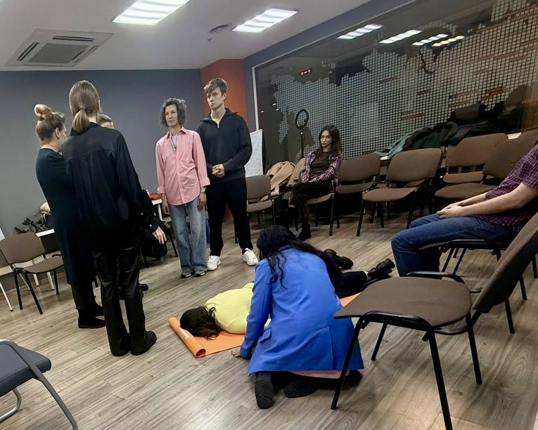
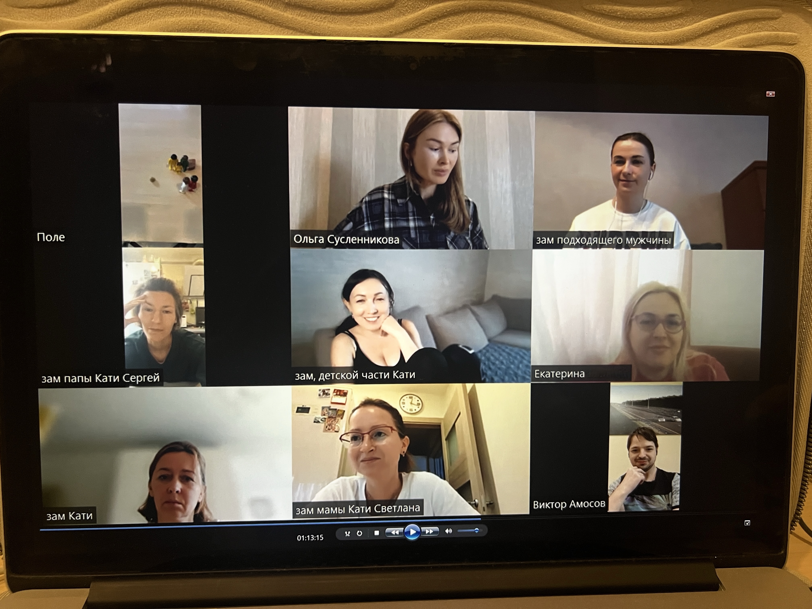
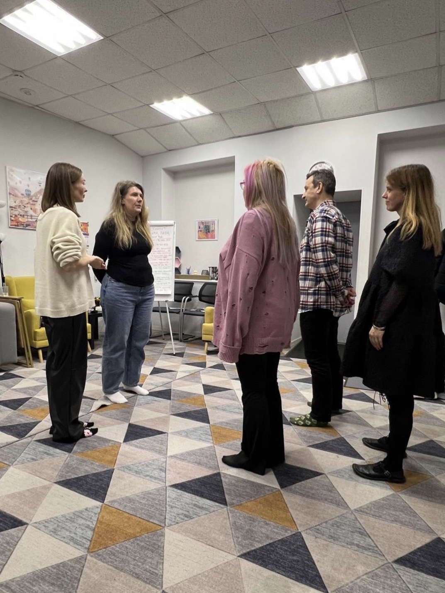
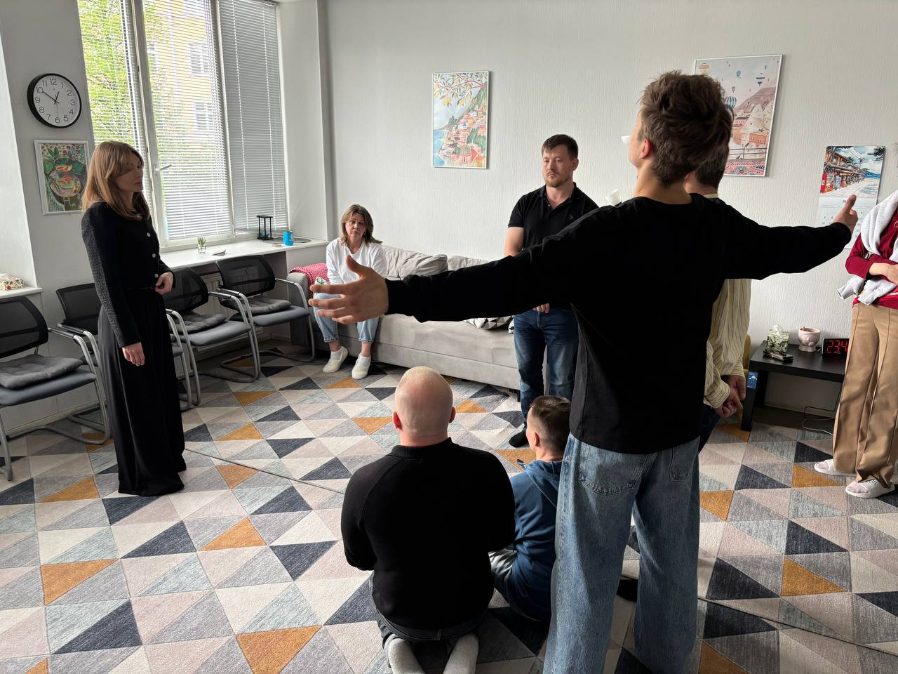
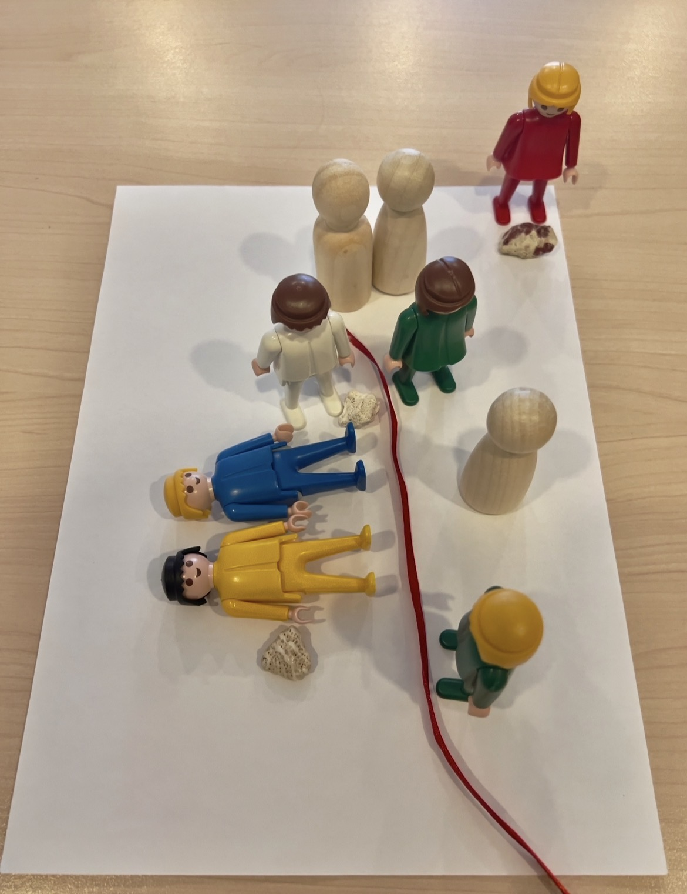
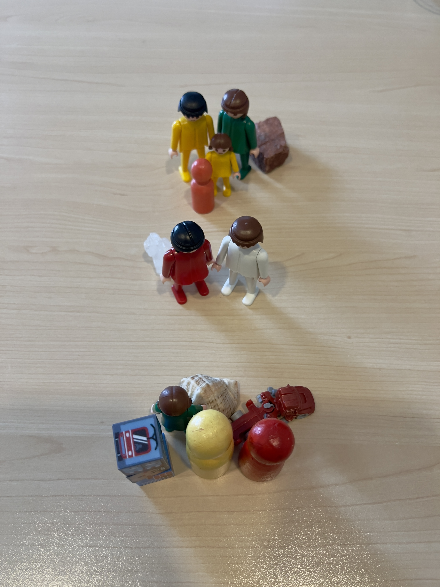

Глубина.
Метод позволяет исследовать переживания, отношения и повторяющиеся сценарии, которые человек может не замечать в повседневной жизни.
Исследование сложных ситуаций в отношениях с помощью метода системных семейных расстановок
Если отношения стали сложными, можно начать с того, чтобы спокойно разобраться в ситуации.
Системные расстановки — один из способов исследовать сложные ситуации в отношениях в паре и семье.
Записаться на расстановкуВ расстановках клиент и его жизненная ситуация представляются как система со всеми её явными и скрытыми взаимосвязями.
В работе можно рассматривать не только личные обстоятельства, но и отношения, семейную историю и повторяющиеся сценарии.
Задача встречи — внимательнее рассмотреть ситуацию, отношения и возможные повторяющиеся сценарии, чтобы определить дальнейшие шаги.
Такой подход помогает рассмотреть ситуацию шире и найти точки для дальнейшей работы.
Метод позволяет исследовать переживания, отношения и повторяющиеся сценарии, которые человек может не замечать в повседневной жизни.
Расстановка не является магией или волшебной таблеткой. В работе мы исследуем отношения, повторяющиеся сценарии и то, как человек воспринимает свою ситуацию.
Продолжительность работы зависит от запроса и человека. Одной встречи иногда достаточно, но это не гарантирует устойчивых изменений и не исключает дальнейшей работы.
хочу забыть бывшего / бывшуюхочу выйти из отношениймне просто плохохочу экологично прожить развод
хочу отпустить прошлоене могу начать новые отношенияпреследуют мысли о прошлом
повторяю одни и те же ошибки в отношенияхчувствую, как будто живу не свою жизнь
не могу найти своего человекапостоянно выбираю не тех
хочу сохранить семьюкризис в отношенияхпостоянные ссоры и конфликты
меня обесцениваютбоюсь своего партнёра и не знаю, как ему противостоять
я узнал(а) об измене: не могу проститьпостоянно попадаю в любовные треугольникине могу выйти из любовного треугольника
боюсь быть отвергнутымбоюсь потерять партнёрамне плохо из-за ревности: я постоянно ревную или ревнуют меня
хочу замужхочу разобраться с переживаниями вокруг рождения ребёнкапереживаю из-за трудностей с зачатием
теряю себя в отношенияхне могу уйти из отношений, хотя в них мне плохо
мне сложно сближатьсячувствую себя одиноконе могу построить длительные отношения
отношения с роднёй невыносимыменя не слышатбоюсь отцовского гневане могу справиться с маминой навязчивостьюсемья на меня давит
ребёнок раздражаетсрываюсь на ребёнкас ребёнком нет взаимопониманияребёнок грубитребёнок постоянно играет в компьютер
конфликтую с коллегойсложно находить общий язык с руководителемна работе токсичная атмосферане получается выстроить личные границы с клиентами
Также люди обращаются с темами, связанными со здоровьем, весом, зависимостями и деньгами. В таких случаях расстановки не заменяют медицинскую или специализированную помощь.
Иногда уже одной встречи достаточно, чтобы по-новому увидеть ситуацию и определить дальнейшие шаги.
Это один из форматов помогающей практики; его результат зависит от запроса, человека и контекста работы.
Это отдельная платная услуга. Если вы пока не готовы сразу записаться на расстановку, можно начать с диагностической сессии.
На встрече мы познакомимся, обсудим ваш запрос, составим генограмму (схему семейной системы), и я отвечу на ваши вопросы о расстановках.
Сессия длится 30–40 минут и проходит онлайн в Zoom. Онлайн-формат доступен клиентам из любой точки мира. Это не медицинская диагностика.
После встречи вы сможете спокойно обдумать информацию и решить позднее, хотите ли записываться на расстановку. Сессия необязательна.
* Генограмма — схема родственных связей и значимых семейных событий, которую мы составляем по вашему рассказу. Она помогает упорядочить информацию о семье и не является подтверждением причин происходящего или фактов о родственниках.
Первая диагностическая сессия
Скидка действует на первый сеанс. Обычная стоимость — 3 500 ₽.
Записаться на диагностикуКлиент озвучивает свой запрос, а ведущий объясняет формат работы. В групповой работе участники могут выступать в роли заместителей — людей, которые представляют выбранные элементы системы.
Заместителей располагают в пространстве в соответствии с тем, как клиент описывает и воспринимает ситуацию.
Во время работы участники могут замечать собственные ощущения, эмоции и импульсы. Их не следует воспринимать как буквальное воспроизведение поведения членов семьи клиента.
На самом деле, в этом нет ничего магического.
В рамках метода эти наблюдения называют «заместительским восприятием». Это часть используемого в расстановках рабочего подхода, а не способ достоверно устанавливать факты о других людях.
В ходе работы участники и ведущий исследуют взаимосвязи и повторяющиеся сценарии, связанные с запросом, и используют выбранные техники для их переосмысления.
Результат встречи индивидуален: для кого-то это новое понимание ситуации или эмоциональное облегчение, а для кого-то — формулировка дальнейших шагов. Существенные изменения в жизни не гарантируются и не зависят только от одной встречи.
Понять формат работы можно, познакомившись с его принципами и обсудив свой запрос с ведущим.
Записаться на расстановку





После встречи люди могут описывать разные состояния и впечатления. Восприятие результата индивидуально:
Расстановка может стать способом внимательнее посмотреть на ситуацию и определить дальнейшие шаги.
Ольга Сусленникова — клинический психолог.
Качество расстановки во многом зависит от ведущего (расстановщика), его опыта и личности.
В работе со мной вы можете рассчитывать на бережность, глубину и профессионализм.
Я не давлю авторитетом, не тороплю, не навязываю концепций, не устраиваю из расстановки шоу.
Работаю строго в интересах и на благо клиента.
Стараюсь быть максимально открытой и даю возможность полевым процессам раскрываться в полной мере.
Собираю камерные группы 7–10 человек, в которых поддерживаю атмосферу теплоты, принятия и безопасности.
Дипломы и сертификаты — в миниатюрах галереи. Переключайте стрелками или выбирайте нужный документ.
На сегодня существуют разные форматы проведения расстановок:
Вы можете выбрать вариант, удобный для вас.
Продолжительность 1–1,5 часа, в Zoom.
5000 руб.
Выбрать1,5–2 часа в Zoom.
7000 руб.
ВыбратьПродолжительность 1,5–2 часа, запись минимум за неделю.
12000 руб.
ВыбратьКонфиденциальность — один из принципов работы. Подробности — в политике конфиденциальности.
Нет, расстановка не рассматривается как магия или волшебная таблетка.
В рамках метода используются образы, роли и наблюдение за переживаниями участников, чтобы исследовать отношения и повторяющиеся сценарии.
Наблюдения во время работы не следует воспринимать как доказанные факты о родственниках или как научное подтверждение скрытых причин происходящего.
Количество встреч зависит от запроса и человека. Одна встреча может помочь прояснить ситуацию и наметить дальнейшие шаги, но иногда требуется дополнительная работа.
Клиент озвучивает запрос, а ведущий объясняет формат работы. В групповой работе участники могут выступать в роли заместителей — людей, которые представляют выбранные элементы системы.
Заместителей располагают в пространстве в соответствии с тем, как клиент описывает и воспринимает ситуацию.
Во время работы участники могут замечать собственные ощущения, эмоции и импульсы. Их не следует воспринимать как буквальное воспроизведение поведения членов семьи клиента и как достоверные сведения о других людях.
В рамках метода эти наблюдения называют «заместительским восприятием»: это часть используемого в расстановках рабочего подхода, а не способ достоверно устанавливать факты о других людях.
Индивидуальная расстановка на фигурках онлайн в Zoom — 1–1,5 часа.
Групповая расстановка с заместителями онлайн в Zoom — 1,5–2 часа.
Групповая расстановка с заместителями очно в СПб — 1,5–2 часа.
Индивидуальная расстановка на фигурках онлайн в Zoom — 5000 руб.
Групповая расстановка с заместителями онлайн в Zoom — 7000 руб.
Групповая расстановка с заместителями очно в СПб — 12000 руб.
Диагностическая сессия — 1200 руб. (вместо 3500 руб.).
Диагностическая сессия — отдельная платная услуга, на которую можно записаться, если вы пока не готовы сразу выбрать расстановку. На встрече мы познакомимся, обсудим ваш запрос, составим генограмму (схему семейной системы), и я отвечу на ваши вопросы о расстановках.
Сессия длится 30–40 минут и проходит онлайн в Zoom. Это не медицинская диагностика.
Стоимость первого сеанса — 1 200 ₽ вместо обычных 3 500 ₽.
После сессии вы можете спокойно обдумать информацию и принять решение о расстановке позднее. Записываться на расстановку необязательно.
Генограмма — это схема родственных связей и значимых семейных событий, которую мы составляем по вашему рассказу. Она помогает упорядочить информацию о семье.
Генограмма не является медицинской диагностикой и сама по себе не подтверждает причины происходящего или факты о родственниках.
Да. Индивидуальные расстановки на фигурках и групповые расстановки с заместителями проводятся онлайн в Zoom. Очно — в СПб.
Основное направление моей работы с помощью системных семейных расстановок — отношения: в паре, семье и с близкими людьми.
На расстановку можно обратиться, если вас беспокоят повторяющиеся сценарии в отношениях, сложности с партнёром или родственниками, развод и расставание, одиночество, ревность, семейные конфликты или трудности с личными границами.
Если вы пока не готовы записаться на расстановку, можно отдельно записаться на диагностическую сессию. На ней мы обсудим ваш запрос и определим, подходит ли для него формат расстановки.
С другими задачами я также могу работать как психолог, гипнолог или коуч. Это отдельные форматы работы, и данная страница посвящена именно системным семейным расстановкам.
Расстановки не являются медицинской диагностикой или лечением и не заменяют профильную помощь. При насилии, угрозах, проблемах со здоровьем, бесплодии или зависимостях важно учитывать необходимость специализированной помощи. Возможность и формат дальнейшей работы обсуждаются индивидуально.
Я, Ольга Сусленникова, клинический психолог. На протяжении 15 лет я регулярно участвовала в расстановках в качестве заместителя, нарабатывая навык чтения поля.
Окончила двухлетнюю программу обучения системным семейным расстановкам в Санкт-Петербургском институте травматерапии «Исток».
Продолжаю обучаться различным приёмам и техникам системной терапии у ведущих мастеров этого дела.
Да. Собираю камерные группы 7–10 человек, в которых поддерживаю атмосферу теплоты, принятия и безопасности.
У каждого человека это может ощущаться по-разному. Цель встречи — лучше понять свой запрос и возможные дальнейшие шаги.
Первая диагностическая сессия — 1 200 ₽ вместо 3 500 ₽. Обсудим ваш запрос и возможный формат дальнейшей работы. После встречи вы сможете спокойно решить, подходит ли вам следующий шаг.
Записаться на диагностику